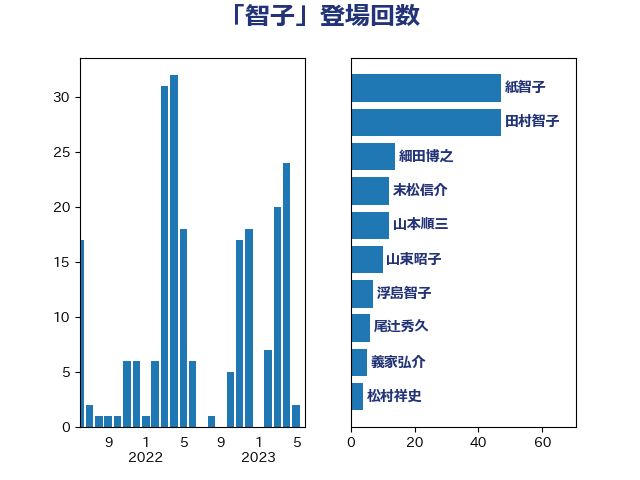

単語「智子」

| 紙智子 | 日本共産党 | 47 回 |
| 田村智子 | 日本共産党 | 47 回 |
| 細田博之 | 自由民主党 | 14 回 |
| 末松信介 | 自由民主党 | 12 回 |
| 山本順三 | 自由民主党 | 12 回 |
| 山東昭子 | 自由民主党 | 10 回 |
| 浮島智子 | 公明党 | 7 回 |
| 尾辻秀久 | 無所属 | 6 回 |
| 義家弘介 | 自由民主党 | 5 回 |
| 松村祥史 | 自由民主党 | 4 回 |
| 岸田文雄 | 自由民主党 | 3 回 |
| 青木一彦 | 自由民主党 | 2 回 |
| 阿達雅志 | 自由民主党 | 2 回 |
| 蓮舫 | 立憲民主党 | 2 回 |
| 河野義博 | 公明党 | 2 回 |
| 松沢成文 | 日本維新の会 | 2 回 |
| 手塚仁雄 | 立憲民主党 | 2 回 |
| 安江伸夫 | 公明党 | 2 回 |
| 佐藤信秋 | 自由民主党 | 2 回 |
| 井上英孝 | 日本維新の会 | 2 回 |
| 齋藤健 | 自由民主党 | 1 回 |
| 鰐淵洋子 | 公明党 | 1 回 |
| 高野光二郎 | 自由民主党 | 1 回 |
| 田村貴昭 | 日本共産党 | 1 回 |
| 海江田万里 | 立憲民主党 | 1 回 |
| 河西宏一 | 公明党 | 1 回 |
| 池田佳隆 | 自由民主党 | 1 回 |
| 横山信一 | 公明党 | 1 回 |
| 根本匠 | 自由民主党 | 1 回 |
| 木原誠二 | 自由民主党 | 1 回 |
| 斉藤鉄夫 | 公明党 | 1 回 |
| 山崎正恭 | 公明党 | 1 回 |
| 山口壯 | 自由民主党 | 1 回 |
| 山口俊一 | 自由民主党 | 1 回 |
| 宮本岳志 | 日本共産党 | 1 回 |
| 宮崎政久 | 自由民主党 | 1 回 |
| 佐々木さやか | 公明党 | 1 回 |